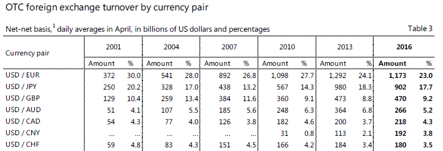

<!DOCTYPE html>
<html>
</html>
<head>
  <meta charset="utf-8">
  <meta http-equiv="X-UA-Compatible" content="IE=edge">
  <title>外汇站（fx-z.com） - 主要、次要和交叉货币对</title>
  <meta name="description" content="">
  <meta name="viewport" content="width=device-width, initial-scale=1">
  <meta name="robots" content="all,follow">
  <!-- Bootstrap CSS-->
  <link rel="stylesheet" href="vendor/bootstrap/css/bootstrap.min.css">
  <!-- Font Awesome CSS-->
  <link rel="stylesheet" href="vendor/font-awesome/css/font-awesome.min.css">
  <!-- Google fonts - Roboto-->
  <link rel="stylesheet" href="https://fonts.googleapis.com/css?family=Roboto:400,300,700,400italic">
  <!-- owl carousel-->
  <link rel="stylesheet" href="vendor/owl.carousel/assets/owl.carousel.css">
  <link rel="stylesheet" href="vendor/owl.carousel/assets/owl.theme.default.css">
  <!-- theme stylesheet-->
  <link rel="stylesheet" href="css/style.default.css" id="theme-stylesheet">
  <!-- Custom stylesheet - for your changes-->
  <link rel="stylesheet" href="css/custom.css">
  <!-- Favicon-->
  <link rel="shortcut icon" href="img/favicon.png">
  <!-- Tweaks for older IEs--><!--[if lt IE 9]>
    <script src="https://oss.maxcdn.com/html5shiv/3.7.3/html5shiv.min.js"></script>
    <script src="https://oss.maxcdn.com/respond/1.4.2/respond.min.js"></script><![endif]-->
</head>
<body>
  <div id="all">
    <div class="container-fluid">
      <div class="row row-offcanvas row-offcanvas-left"> 
        <!--   *** SIDEBAR ***-->
        <div id="sidebar" class="col-md-4 col-lg-3 sidebar-offcanvas">
          <div class="sidebar-content">
            <h1 class="sidebar-heading"> <a href="https://fx-z.com">fx-z.com</a></h1>
            <p class="sidebar-p">介绍外汇相关的基本知识，告诉您如何进行自己的技术面和基本面分析，讲解先进的交易理念，并且为您阐述失败交易者与专业交易者之间的真正区别。 </p>
            <p class="sidebar-p">通过这些课程的学习，您将学会如何根据自己的优势来应用情绪分析，还将了解真实世界的事件会对货币汇率产生什么影响，央行在外汇市场中所发挥的作用，以及交易者在颇受欢迎的即期外汇交易中有哪些选择方案。 </p>
            <ul class="sidebar-menu">
                <!-- Link-->
                <li class="sidebar-item"><a href="https://fx-z.com" class="sidebar-link">首页</a></li>
                <!-- Link-->
                <li class="sidebar-item"><a href="cihui.html" class="sidebar-link">外汇词汇</a></li>
                <!-- Link-->
                <li class="sidebar-item"><a href="ebook.html" class="sidebar-link">获取外汇电子书</a></li>
            </ul>
            <p class="social"><a href="https://www.forextimechina.com.cn/zh?form=IZIN" target="_blank"data-animate-hover="pulse" class="external facebook"><i class="fa fa-eur"></i></a><a href="https://www.forextimechina.com.cn/zh?form=IZIN" target="_blank" data-animate-hover="pulse" class="external gplus"><i class="fa fa-gbp"></i></a><a href="https://www.forextimechina.com.cn/zh?form=IZIN" target="_blank" data-animate-hover="pulse" class="external twitter"><i class="fa fa-rmb"></i></a><a href="https://www.forextimechina.com.cn/zh?form=IZIN" target="_blank" title="" class="external instagram"><i class="fa fa-dollar"></i></a><a href="https://www.forextimechina.com.cn/zh?form=IZIN" target="_blank" data-animate-hover="pulse" class="email"><i class="fa fa-money"></i></a></p>
            <div class="copyright text-center text-md-left">
             
              
            </div>
          </div>
        </div>
        <!--   *** SIDEBAR END ***  -->
        <!--   *** DETAIL ***-->
        <div class="col-md-8 col-lg-9 content-column white-background">
          <div class="small-navbar d-flex d-md-none">
            <button type="button" data-toggle="offcanvas" class="btn btn-outline-primary"> <i class="fa fa-align-left mr-2"></i>菜单</button>
            <h1 class="small-navbar-heading"> <a href="https://fx-z.com/12-2.html">下一篇 </a></h1>
          </div>
          <div class="row">
            <div class="col-xl-10">
              <div class="content-column-content">
                <h1>主要、次要和交叉货币对</h1>
    <p>
    每个主权国家均拥有自己的货币，仅少数几个使用其他国家的货币，例如巴拿马使用美元。根据发行国的状况，货币被分为主要货币或次要货币；这些状况包括：
</p>
<p>
    <strong>GDP 体量</strong>
</p>
<p>
    <strong>是否是储备货币</strong>
</p>
<p>
    <strong>资本市场规模</strong>
</p>
<p>
    <strong>是否免受资本管制</strong>
</p>
<p>
    “主要”货币是指世界贸易和金融市场中最常用的货币，包括美元、英镑、欧元和日元。请注意，中国是世界第二或第三大国，但人民币未被当做“主要”货币，这是因为中国的利率和汇率是由政府，而不是自由市场决定。每种主要货币对必须自由交易，意味着不会以资本管制或政府限制流入和流出的形式受到干预。
</p>
<p>
    每种主要货币或多或少是一种储备货币，其中美元占 65% 以上的份额，但欧元、英镑和日元也被用作储备货币。国家持有外币储备的主要原因在于，如果所有卖家愿意收取储备货币，则外币储备能够立刻买入食品或军事设备。美元成为顶级储备货币的另一个原因是约 75％ 的世界贸易以美元计价。
</p>
<p>
    因此，不难发现，主要货币对的贸易和资本流动交易量最高。它其实应该被称为主要/主要货币对，因为每种货币本身是主要货币，然后将两种强国货币结合起来，例如欧元/美元、欧元/日元或英镑/欧元。当您将一种主要货币（美元）与一种次要货币（墨西哥比索）相结合时，您将获得一个次要货币对。
</p>
<p>
    另外，“主要”货币还包括瑞士法郎、加元、澳元和新西兰元。瑞士法郎有资格称为主要货币是因为，虽然瑞士经济和金融市场的体量相对较小，但瑞士历来是中立国和避险国。加拿大、澳大利亚和新西兰有资格是因为它们有一流的金融系统，而且是重要的原材料/商品供应国。请注意，几乎所有人都将瑞士法郎列入主要货币对之中，但不是所有人都会包括加元、澳元或新西兰元。
</p>
<p>
    不是所有主要货币都享有平等的地位。美国拥有最大的政府债券市场（以及最大的公司债券市场），其中，外资对其中期、长期债券的占有率约为 40%。日本政府债券市场的体量也非常大，其中，外资约占有 10%。欧洲债券市场分散于许多成员国（欧盟有 28 个成员国，使用欧元的欧洲货币联盟有 19 个成员国）。
</p>
<p>
    <strong>请谨慎使用您见到的数据</strong>
</p>
<p>
    当财经新闻写道“美元”或“欧元”时，报道者其实犯了一个错误。如果仅提到一种货币，却不指明第二种货币，这会引起混淆。当报道者写道“美元上涨”时，它是指哪种美元呢？可能是美元指数——一种基于一篮子货币的期货合约，或是 USD/JPY，甚至是 EUR/USD，虽然准确的说，它应该写成“欧元下跌”。
</p>
<p>
    换言之，外汇市场不存在单一的货币。按照定义，所有外汇货币均为货币对形式。看待货币对的有效方式是，将货币对中排在前面的基准货币作为对象，将排在第二的货币作为可用于买入或卖出对象的资金。因此，如果您相信欧元将上涨，因而买入 EUR/USD，以便之后通过卖出来获取盈利，则欧元类似股票、债券或商品等对象，而且您将支付恰好以美元计价的资金来买入欧元。您也可以同样轻松地用日元（EUR/JPY）买入欧元，或用英镑买入欧元（EUR/GBP）。
</p>
<p>
    <strong>货币对的三种类型</strong>
</p>
<p>
    <strong>主要货币对</strong>
</p>
<p>
    如果我们将 BIS 报告（国际清算银行）作为参考点，我们可以说“主要货币对”占每日交易额的 3% 以上。主要货币对有以下七项：EUR/USD，USD/JPY，GBP/USD，AUD/USD，USD/CAD，USD/CNY 和 USD/CHF。
</p>
<p>
     货币对外汇场外交易额 - 3% 及以上。
</p>
<p>
    不过按照目前的传统定义，主要货币对不包括 USD/CNY，因为它不提供给零售客户。同时，由于新西兰元的突出地位，NZD/USD 被纳入了主要货币对的范围。另外，虽然 EUR/GBP、EUR/JPY 和 GBP/JPY 等货币对的交易量较低，但它们通常被视为主要货币对。
</p>
<p>
    <strong>次要货币对</strong>
</p>
<p>
    “次要”货币对是指，货币对中有一种货币所属国的股票和债券金融市场相对较小或不够发达。“次要”货币所属的国家可能有巨大的经济体量，例如中国或俄罗斯，但由于这些国家的货币无法自由浮动，这些货币仍然被视为次要货币。次要货币还包括一些不发达市场以及一些新兴市场的货币。发达市场次要货币的示例是韩元。
</p>
<p>
    次要货币包括墨西哥比索、人民币、韩元、瑞典克朗、俄罗斯卢布、挪威克朗、港币、新加坡元和土耳其里拉。在零售即期外汇市场中，“次要”货币目前通常被称为“外来”货币，虽然有些分析师认为“外来”货币包括两种次要货币，例如南非兰特/土耳其里拉。大部分次要货币在外汇总交易量中仅占据极低的份额。例如，EUR/TRY 占 0.1%，而 USD/TRY 占 1.2%。
</p>
<p>
    还有许多其他货币也被视为次要货币，例如波兰兹罗提、匈牙利福林、南非兰特、巴西雷亚尔等。在波兰和匈牙利，人们对这两个国家正式进入欧洲货币联盟的完全预期使欧元得以广泛使用。预计波兰将于 2020 年加入，但匈牙利还没有具体的目标日期。
</p>
<p>
    将主要货币与次要货币组合并不能形成“主要”货币对。它仍然是次要货币对。
</p>
<p>
    <strong>交叉汇率</strong>
</p>
<p>
    交易者将两种货币对，例如 EUR/USD 和 USD/MXN，相结合以创建交叉汇率。取消重复货币可让交易者创建混合货币对或“交叉”汇率，例如 EUR/MXN。虽然 EUR/USD 是交易量最大的货币对，同时 USD/MXN 也颇受欢迎，但是由这两者形成的货币对仅有微不足道的交易量。
</p>
<p>
    货币组合有无数种可能性，但组合越深奥，例如 TRY/KRW 交叉货币对（土耳其里拉对韩元），则点差越大、流动性越低。
</p>
<p>
    主要交叉货币对的流动性通常很容易获得，而且点差较小，包括 AUD/CAD、AUD/JPY、EUR/AUD 和 CAD/JPY。即使是 EUR/PLN（欧元对波兰兹罗提） 和 EUR/RUB（欧元对俄罗斯卢布）等次要交叉货币对，在正常情况下也可以轻松获得报价，虽然其交易量不一定总是那么大。
</p>
<p>
    <strong>专业建议：交易次要货币对和交叉货币对时，重要之处在于要意识到如果流动性由于某种原因而枯竭（通常是一些事件触发了风险厌恶情绪），包含新兴市场货币的货币对将首先加大点差和降低流动性，然后是其他次要货币对和交叉货币对，最后是主要货币对。如果即将面临更大的风险，则最好坚持交易可控性更强的主要货币对。</strong>
</p>
<p>
    <br/>
</p>
<p>
    <br/>
</p>
              </div>
            </div>
          </div>
        </div>
      </div>
    </div>
  </div>
  <!-- JavaScript files-->
  <script src="vendor/jquery/jquery.min.js"></script>
  <script src="vendor/popper.js/umd/popper.min.js"> </script>
  <script src="vendor/bootstrap/js/bootstrap.min.js"></script>
  <script src="vendor/jquery.cookie/jquery.cookie.js"> </script>
  <script src="vendor/owl.carousel/owl.carousel.min.js"></script>
  <script src="vendor/masonry-layout/masonry.pkgd.min.js"></script>
  <script src="js/front.js"></script>
</body>